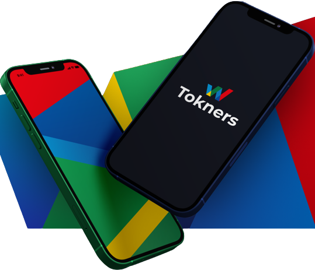

At Tokners we are
Reimagining social media through the power of the blockchain.
We are creating social media 3.0 with influencers, celebrities and creators being able to launch their own digital currency by simply creating a profile with media content posted as Non fungible Tokens that can be owned and traded on the Tknrs network.
